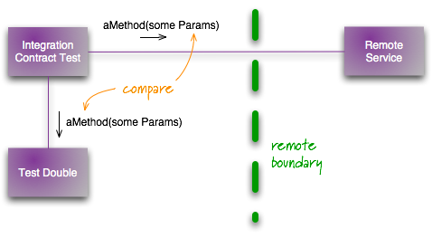
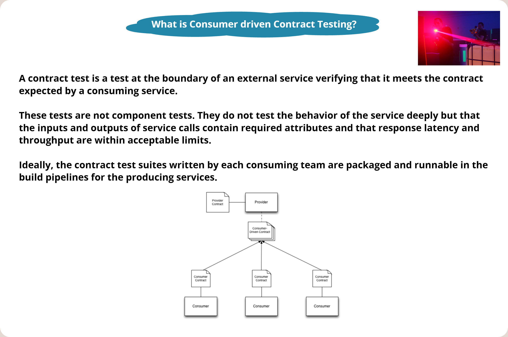
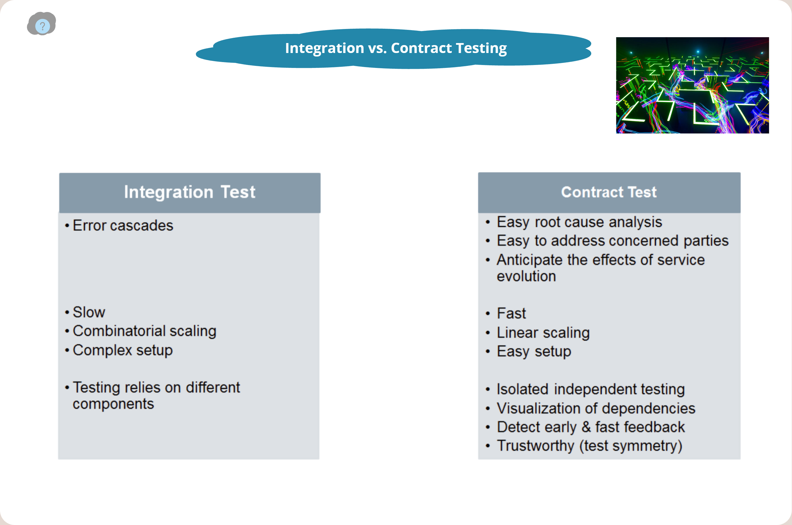

Contract Testing (contract testing)
Contract Testing (contract testing) is a modern and highly effective approach to verifying integration interfaces (APIs) between independently evolving software components, most commonly in microservices architecture. Traditionally, integration was verified either by writing brittle end-to-end (E2E) tests, which are extremely slow and demanding to maintain, or by isolated mocking (stubbing) of third parties, which carries the risk that the behavior of the real service will diverge from the mock over time (known as mock drift).
Contract testing resolves this dilemma by formalizing communication between the consumer (Consumer) and the provider (Provider) of an interface into an executable and automatically verifiable contract. This approach makes it possible to shift integration testing to the left (Shift-Left), accelerate the CI/CD cycle, and give developers absolute certainty that a change in one module will not cause a crash in downstream systems.


#2. Definitions and basic concepts
#Contract (Contract)
- Definition: A formal, machine-readable agreement between the Consumer and the Provider that precisely specifies the expected structure of requests (request) and the corresponding guaranteed responses (response), including data types, formats, and status codes.
- Significance in architecture: Serves as an explicit boundary for separating (decoupling) subsystems. It allows the architect to define the interface as a stable point of reference that teams can rely on regardless of internal implementation changes.
- Significance in testing: Represents a single source of truth (test basis) from which mocks for consumer tests and test scripts for provider validation are generated.
- Typical mistake / misconception: Treating the contract as a static text document (e.g., a PDF in Confluence) instead of an executable artifact.
#Contract Testing (Contract testing)
- Definition: An integration testing method in which both the consumer-side implementation and the provider-side implementation are independently verified to ensure that they strictly conform to the defined contract.
- Significance in architecture: Enables the safe and independent deployment (independent deployability) of services without requiring coordinated deployment of the entire system.
- Significance in testing: Reduces dependence on expensive and unstable E2E tests by moving integration verification to the level of fast integration tests (usually running in a matter of milliseconds).
- Typical mistake / misconception: Attempting to test complex internal business logic (e.g., price calculations) through contracts. A contract should verify only message formats and interface compatibility, not the correctness of internal algorithms.
#Consumer-Driven Contract (CDC) Testing
- Definition: A specific agile pattern of contract testing in which it is the consumer (Consumer) who defines its data requirements in the form of automated tests. These requirements are then aggregated, and the provider (Provider) continuously runs them against its implementation.
- Significance in architecture: Prevents unnecessary interface development "for future use" (gold-plating). Supports the YAGNI (You Aren't Gonna Need It) and KISS principles – the provider implements exactly what its clients actually require.
- Significance in testing: Provides immediate feedback to the API developer. If they change the name of a field used by one of the clients, the CDC test in their build pipeline fails and prevents the deployment of incompatible code.
- Typical mistake / misconception: Attempting to enforce CDC for publicly published third-party APIs (e.g., Darksky API or Google Maps API). A public provider cannot and will not run tests for thousands of external consumers.
#Pact (JSON contract file)
- Definition: Currently the most widely used open-source framework for CDC testing, which records consumer interactions in a special JSON file (known as a "pact file").
- Significance in architecture: Standardizes the contract format and enables cross-language integration (e.g., a Java backend and a JavaScript frontend communicating through a single shared file).
- Significance in testing: During consumer tests, Pact automatically starts a mock server on a local port that conforms to the defined contract. On the provider side, Pact then replays these interactions (replay) directly against controllers (e.g., through MockMVC in Spring).
- Typical mistake / misconception: Manually distributing pact files instead of using a dedicated central registry (Pact Broker) that automatically manages versions and links verification results.
#Fake Contract Validation (Google style)
- Definition: A contract testing strategy used in monorepos, where reusable fake implementations (Fakes) are used instead of CDC tools. These "fakes" are themselves covered by a set of contract tests run against both the real production service and the fake.
- Significance in architecture: Google relies heavily on the unified Protocol Buffers data format and a monorepo, eliminating the need for CDC tools such as Pact. The architecture is protected by the API owners themselves providing and maintaining high-fidelity "fakes".
- Significance in testing: Developers of downstream services do not need to mock at all. They use a ready-made, tested Fake whose behavior is guaranteed to match the production service completely.
- Typical mistake / misconception: Using a fake without its own tests. An unmaintained fake will inevitably start diverging from reality as soon as the production code changes.
#3. Common mistakes and anti-patterns
In practice, critical mistakes are made when implementing contract testing that can undermine the entire test strategy:
#Mistakes in architecture and test strategy:
- Over-Mocking (excessive mocking of internal classes): Developers mock internal interfaces within a single component instead of testing through the public API. If an internal class changes (e.g., during refactoring), hundreds of mocks fail even though the system behaves correctly externally.
- How to prevent it: Test primarily through public API contracts. Enforce the use of real dependencies wherever possible, or use proven fakes. One useful tool is, for example, the
@DoNotMockannotation.
- How to prevent it: Test primarily through public API contracts. Enforce the use of real dependencies wherever possible, or use proven fakes. One useful tool is, for example, the
- Cyclic dependencies between components: If cyclic relationships exist between microservices, building isolated contract tests is extremely difficult because the consumer and provider overlap with each other.
- How to prevent it: Apply the dependency inversion principle (Dependency Inversion) and design a clean layered architecture with a clear direction of data flows.
- Over-Mocking (excessive mocking of internal classes): Developers mock internal interfaces within a single component instead of testing through the public API. If an internal class changes (e.g., during refactoring), hundreds of mocks fail even though the system behaves correctly externally.
#Mistakes in requirements and communication:
- Moving business logic into contracts (Asserting Business Logic): Attempts to verify complex calculation algorithms through CDC tests. The contract swells with hundreds of test cases representing business states.
- How to prevent it: Limit contract tests exclusively to compatibility (e.g., "if I send a valid ID, I receive JSON with fields X, Y, Z of the specified type"). Leave complex calculations to the provider's unit tests.
- Insufficient collaboration between teams (Missing "3 Amigos" context): The consumer team generates incomplete or nonsensical contracts without consulting the provider team and "throws them over the fence".
- How to prevent it: Introduce "3 Amigos" meetings (Business, Dev, QA) before the sprint begins. Jointly define and agree on API contracts and how they will be verified.
- Moving business logic into contracts (Asserting Business Logic): Attempts to verify complex calculation algorithms through CDC tests. The contract swells with hundreds of test cases representing business states.
#4. Exam questions
This section contains questions that an examiner may ask, with guidance on what a correct answer should include:
#A. Basic level
- Question: What is the difference between a traditional integration test using WireMock and a contract test using Pact?
- What the answer must include: WireMock tests only how our client (Consumer) can process predefined (canned) responses. However, if the provider's real API changes, WireMock tests still pass and do not detect the error (drift). Pact, in contrast, generates a contract file that is subsequently executed and verified directly at the provider, which completely prevents drift.
#B. Intermediate level
- Question: Describe the CDC testing life cycle. How does the contract get from the consumer to the provider, and how is it verified?
- What the answer must include: 1. The Consumer writes a test for its client class using Pact mocks. 2. A successful test run generates a JSON pact file. 3. This file is published to a central registry (Pact Broker). 4. The provider's CI/CD pipeline downloads this file. 5. A provider test is executed that sends HTTP requests from the contract to a running instance of the provider's service and compares the responses with the expected schema.
#C. Advanced level
- Question: Why do large technology companies (e.g., Google) often not use CDC tools such as Pact, and how do they address this in monorepos?
- What the answer must include: Google relies on a monorepo and the unified Protocol Buffers serialization format. Interface changes are detected by static analysis and compilation when code is submitted (pre-submit). Instead of CDC, fakes are used that are provided by the API author and covered by their own contract tests, run concurrently against both the fake and the real implementation.
#D. Questions about practical experience
- Question: How do you handle state management (state management) on the provider side when running contract tests? What if the contract requires a user with ID 42 to exist in the database?
- What the answer must include: Pact offers the concept of "Provider States". In the contract, the consumer defines a state, e.g., "given user 42 exists". On the provider side, a method must be implemented and annotated, for example, with
@State("user 42 exists"), which populates the database with the appropriate test data before the test itself runs, ideally using an in-memory DB or Testcontainers.
- What the answer must include: Pact offers the concept of "Provider States". In the contract, the consumer defines a state, e.g., "given user 42 exists". On the provider side, a method must be implemented and annotated, for example, with
#E. Questions about trade-off decisions
- Question: Our team has limited capacity. Should we write a complete set of E2E tests through the UI or invest in Contract tests? What are the trade-offs?
- What the answer must include: Although E2E tests provide the highest business confidence (they test the real system from the user's perspective), they are extremely slow, expensive, and brittle. Contract tests are orders of magnitude faster and more stable, and they pinpoint errors precisely (low MTTR – Mean Time To Repair). Recommended trade-off: keep E2E only for critical business scenarios (happy path) and move all structural compatibility to the contract level (in accordance with the Testing pyramid / trophy).
#5. Model exam answer (4–6 minutes)
(The following text is prepared as a continuous speech for an oral examination. It is recommended to speak in a structured manner, with confidence, and to refer to architectural principles.)
"Dear examination committee, the topic of Contract Testing, or contract testing, represents a key pillar of modern quality engineering, especially in the context of distributed systems and microservices.
When we build a system composed of many independent services, the greatest risk is that a change made by one team to its interface will silently break downstream services. Historically, we addressed this problem either through extensive use of End-to-End tests or through local mocking. However, both approaches have fundamental disadvantages. E2E tests are slow and expensive, require complex test environments, and often exhibit instability (flakiness). Although local mocking is fast, it suffers from a lack of feedback – if the provider changes its interface, our local mock in the consumer tests still passes, and the error only manifests in production.
Contract testing elegantly resolves this dilemma. It acts as a lightweight yet exceptionally strong integration layer. Its principle is to formally describe the interaction at system boundaries in the form of an executable contract – most commonly in JSON format using the Pact framework.
If we choose the most common variant – Consumer-Driven Contract Testing – development starts with the consumer. The consumer writes a test that clearly defines: 'If I send a GET request to /weather?city=Prague, I expect a 200 response with a precise JSON schema'. Executing this test generates what is known as a pact file. This file is then sent to a central registry (Pact Broker). On the other side, the provider team downloads this contract and runs it directly against its running service as part of its CI/CD pipeline. If the provider were, for example, to rename a field from temperature to temp, the test would immediately fail, the build would be blocked, and the error would never be released.
Allow me to give a concrete practical example that illustrates the implementation well. Imagine a microservice that integrates an external weather forecast through a REST API. If we wrote a purely integration test using WireMock, we would test only our ability to parse substituted data. However, if we use Pact, we generate a contract that we hand over to the team managing the weather service. They validate this contract as part of their integration verification. In embedded or automotive environments, contracts are similarly used at the hardware-software interface (HSI) level to verify signal and bus compatibility.
As a test architect, however, I must also consider the trade-offs, or architectural compromises, of this approach.
- Organizational overhead: CDC requires close collaboration between teams. If teams do not communicate and merely 'throw' contracts to each other without agreement, the process will fail.
- State Management: Contract verification on the provider side requires preparing data states (e.g., 'a user with ID 10 exists'). This can be technically demanding in complex systems.
- Limits of applicability: CDC is not a silver bullet. For public third-party APIs (where we have no influence over the provider), we must still use a combination of WireMock and occasional E2E tests as 'Plan B'. In addition, in monorepos with strict static analysis and shared types (e.g., Protocol Buffers at Google), CDC is often redundant, and relying on tested 'Fakes' is more effective.
To summarize: Contract testing allows us to achieve the ideal of the modern Testing trophy (Testing Trophy) – that is, to move the center of gravity of testing into a fast and reliable integration layer. It increases system testability by providing a clear contractual framework. From a software architecture perspective, this is an investment that pays for itself many times over in the form of stable software that can be deployed safely."
#6. Short version for quick revision (Pocket cheat sheet)
5 main points:
- Verifies interface (API) compatibility between services without requiring the entire system to run.
- Prevents the integration of incompatible code by catching errors in the CI pipeline.
- Eliminates the problem of "mock drift" (when a mock does not match reality).
- Is much faster and more stable than E2E UI testing.
- Supports independent deployment of services to production.
5 key concepts:
- Contract: A machine-readable specification of API interactions.
- Consumer: A service that consumes an API and defines its needs.
- Provider: A service that provides an API and verifies compliance with the contract.
- Pact File: A JSON representation of the contract generated by the consumer test.
- Fake (Google style): A tested, faithful substitute for a service, shared in a monorepo.
5 typical exam questions:
- How do contract tests fit into the concept of the testing pyramid / trophy?
- What is "mock drift", and how does contract testing prevent it?
- How does CDC (Consumer-Driven Contracts) simplify API design?
- What is the difference between Contract Testing and functional testing?
- When is it appropriate to use WireMock, and when should Pact be used instead?
3 most common mistakes:
- Testing complex business logic through contracts instead of unit tests.
- Creating contracts without direct consultation and communication between teams.
- Neglecting automated contract distribution (absence of Pact Broker).
1 model sentence for the exam:
"Contract testing allows us to replace brittle and slow E2E tests with fast, isolated integration tests that guarantee interface compatibility without requiring the entire infrastructure to run."
#7. Learning Outcome (Link to LOPO)
This question directly fulfills the objectives defined in LOPO:
- Testing Pyramid / Test Trophy: Contract testing precisely represents the transition from the traditional Testing Pyramid (where unit tests dominate) to the modern Testing Trophy (where the focus is on integration tests). Contracts make it possible to integrate services cheaply, quickly, and in isolation.
- Testability (Testability): Introducing explicit contracts radically increases the system's observability (observability) and controllability (controllability). The architecture becomes more testable because interfaces are clearly defined and can be isolated.
- Test User Stories: Contracts help define acceptance criteria for user stories at the integration level. During "3 Amigos" meetings, developers and QA precisely define API contracts as part of the "Definition of Ready" for the given story.
#8. Summary in one table
| Area | What is important | Relationship to architecture | Relationship to testing | Typical exam question |
|---|---|---|---|---|
| Contract Definition | An executable JSON file representing an API agreement. | Decoupling services, stable interfaces. | Serves as the test basis for generating mocks. | How do we formalize an API agreement in Pact? |
| Consumer-Driven (CDC) | The consumer defines and sends its requirements to the provider. | Prevents gold-plating, supports YAGNI. | Fast feedback in CI when compatibility is broken. | Why is CDC considered an agile approach to integration testing? |
| Pact Framework | Automatic mock generation and provider verification. | Enables cross-language service integration. | Replaces manually written WireMock stubs with automated tests. | Describe the role of Pact Broker in the CI/CD pipeline. |
| Fakes (Google Style) | The API author maintains and tests a faithful Fake for downstream teams. | Suitable for monorepos and unified formats (Protobuf). | Developers test against real, tested fakes without mocking. | Why does Google prefer tested Fakes over CDC tools? |
| State Management | Preparing data states on the provider side. | Requires a test API or state-setup endpoints. | Enables testing of different scenarios (e.g., an empty cart vs. a full one). | How do you handle dependence on database state when running provider tests? |
